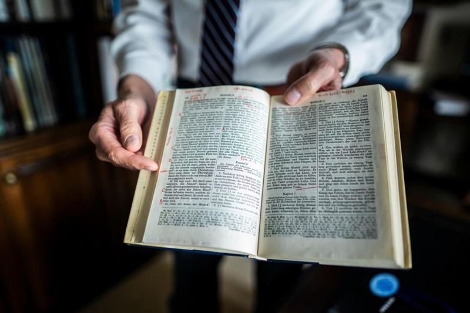
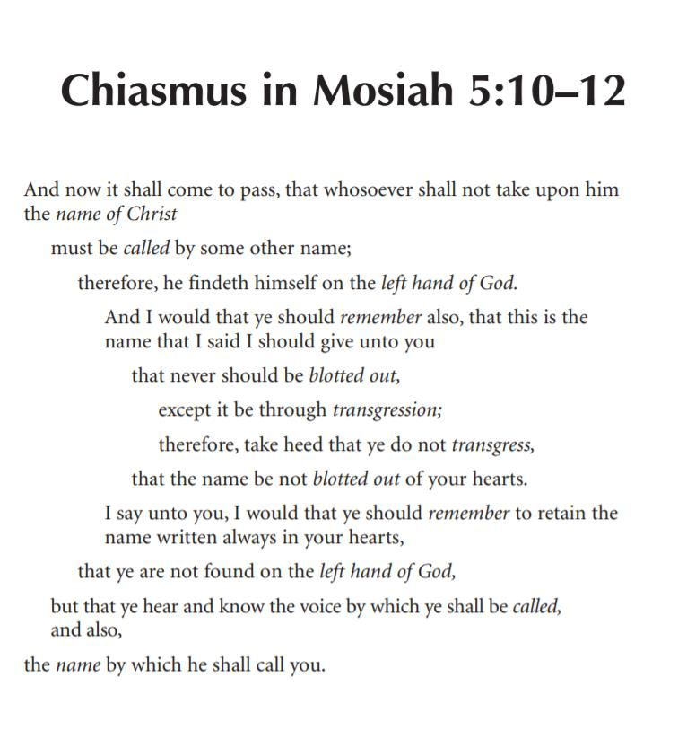
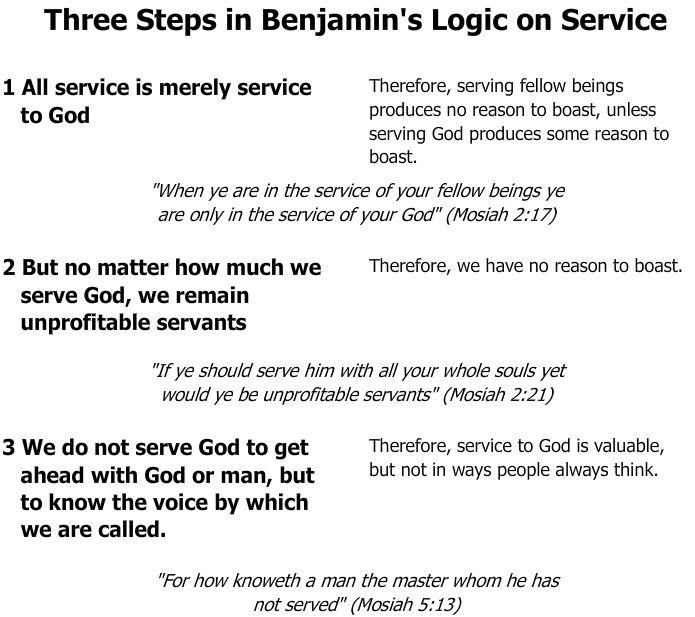

The people then say to Benjamin that their hearts had been changed. In what way were their hearts being changed? What were the consequences that came from this great experience? The answer: They had no more desire to do evil. That is a great effect!
Having “no more disposition to do evil” may be the greatest evidence of the “mighty change of heart.” We can test ourselves in that way. We can ask ourselves how we are doing in not even considering or wanting to commit sins.
These two verses are a beautiful tribute to King Benjamin. How he would have loved to hear these words, not because they were praise of his kingship, but even more so because he had succeeded in the one thing he wanted to really accomplish.
He was at the end of his rule, and they were thanking him. At the beginning of his speech, he mentioned rendering thanks and praise with their whole hearts (2:20), and so when the people said it was because of their faith in what the king had taught them that they had this great knowledge, it was more than just a nice recognition. Their words arose from a generosity that comes with the experience of conversion and when we think more of what other people have done for us than what we have done for them.
Do we admire and have faith in our Church leaders? Is it not important to recognize that it is because of the things that our prophet “has spoken unto us” that “has brought us to this great knowledge?” Let us personalize this. We can read what they did, but do we do the same things whenever we have this mighty change and feel wonderful blessings in our lives?
What about this “exceeding joy whereby we do rejoice?” This is another consequence.
Rejoicing with such exceedingly great joy feels more than just good. It is not a matter of “Umm, that was pretty nice.” There was much joyous celebration going on among Benjamin’s people.
And as a result, Benjamin took the old things that were limited and only applied to the king, all those royal prerogatives, and opened them up and extended them to all his people. Although some of them are just symbolic things, what Benjamin gave his people were essentially royal privileges. For example, it was normally only the king that was brought up from his humiliation to be ritually raised up and crowned as the new king.
Benjamin said that we are all of the dust and we are all humiliated, but then we are all elevated. To us that sounds indeed like a very generous thing, but more than that, from their frame of reference, now they were all actually putting themselves in the position that the king was normally in. Usually in an ancient Israelite coronation, the king was ritually adopted by God as his son and on that day He had ritually begotten the new monarch and pronounced, “Thou art my son” (Psalms 2:7). Benjamin’s people would now all become God’s sons and daughters (5:7). And in addition, they were all going to come away from this ceremony with a new name (3:8; 5:8), while normally there was only one person who came away from a coronation with the new name, and that was the new king. In so many ways, Benjamin was helping all his people to see themselves in a different way. They were not yet ready for democracy, with all people having the duties of the governors, but a generation later, they would be ready as a people to take that political step (Mosiah 29). That is something that could be, and has been to some extent, studied in much more depth.
When the people were entering into the covenant, they were instructed that they must answer the king by saying essentially that they were willing to enter into this covenant, and we are doing this voluntarily because our desires are there. We are willing to enter into a covenant with our God to do his will and to be obedient to his commandments, and also to keep the commandments given to us by the new king.
Where do we manifest our willingness? Where does the word willingness come into our covenantal renewal? In the sacrament prayer. Those who partake witness unto God the Eternal Father that they “are willing to take upon them the name of thy Son, and always remember him and keep his commandments which he has given them” (3 Nephi 18:10; Moroni 4:3; D&C 20:77). What does being willing really mean? It means we are going to do this of our own free will and choice. Choice and willingness are a vital part of covenant-making.
There are two things that traditionally only happened to the king. One occurred at the coronation when traditionally the king would hear God saying, “Thou art my Son; this day have I begotten thee.” (Psalm 2:7). The king became a son of God representing God as his viceroy here on earth, the link between God and the people. However, in Mosiah 5:7, Benjamin declared that through the covenant, the people had all become sons and daughters of Christ. These people were in transition. They were living the Law of Moses, and they were expecting the fulfillment of the prophecies of Christ. In Benjamin’s speech we see what is missing in the Old Testament. We have the Old Testament and the New Testament, but we do not have anything showing how they went from one to the other.
Benjamin’s speech is exactly halfway between the old law and the new law, and it begins with every single person being able to make the same covenant that was previously made only by the king. They are all sons and daughters of God. They get the name; they get the blessings and promises of the covenant.
In Deuteronomy 17:18–19, which lays out the requirements for a righteous king, he was required to write himself a copy, and read the law “all the days of his life” (Figure 4).
Now Benjamin gave everybody a copy of the speech so that they could read in it in their families all the rest of their lives. They now could develop a sense of, “I am responsible; I am accountable.” Ultimately, his talk was designed and shared so that everyone there would take upon them the name of Christ, enter into a covenant, not just to keep the commandments that his son would be giving, as in a normal coronation ceremony, but also the commandments that Christ will give. He changed their hearts and lives forever, and this text can change ours.
Benjamin then spoke about obedience: “There is no other name given whereby salvation cometh; therefore, I would that ye should take upon you the name of Christ, all you that have entered into the covenant with God that ye should be obedient unto the end of your lives” (Mosiah 5:8). This echoed what the people themselves had said that they wanted to do: “And it shall come to pass that whosoever doeth this shall be found at the right hand of God [and not on the left hand of God], for he shall know the name by which he is called; for he shall be called by the name of Christ (Mosiah 5:9, cf. vv. 10, 12).
This is the positive, or reward, half of the covenant. Notice the perfect balance in this center piece of the final section of the speech: if and if not.
By the way, in the name Benjamin, the last part ja (yah)-min, means right hand. Ben is the son of. Thus, Benjamin is the son of the right hand. Benjamin was saying, “If you want to be with me, come on the right hand. If you want to be over there, go on the left hand” The promise, then, is balanced with the warning! There will be a cutting off or a blotting out!
The word 'right' can have both a directional meaning (that is, on the right hand side), and also an empowerment sense (that is, the right hand of power, strength, and favor).
See Matthew L. Bowen, Name as Key-Word (2018), 50. Perhaps his own name drew Benjamin to refer in his speech five times to the Lord as "omnipotent" (Mosiah 3:5, 17, 18, 21; 5:15) and five times to speak of his matchless, marvelous "power" (Mosiah 2:11; 3:5; 4:6, 9; 5:15).
Mosiah 5:10–12 is one of the most famous passages in the Book of Mormon, because of its clear and meaningful chiastic structure. This passage, by the way, was the very first chiasms that I found in the Book of Mormon. I was awakened and led by the Spirit, early in the morning, in Regensburg, Germany, on Wednesday, August 16, 1967, to spot this structure, and a few minutes afterwards to find the same pattern in Mosiah 3:18–19.

As one can still imagine, over 50 years later, that discovery on that morning was unforgettably exciting. It changed me, my focus, my testimony, my life, and my already deep love for the scriptures and the gospel of Jesus Christ, in many creative and productive ways.
It also changed the way that people everywhere read the Book of Mormon. More than ever before, people now approach this sacred record with much greater respect for its deliberate organization, for the elegant composition of its passages, for the meaningful placement of its individual words, for the compelling logic of its coherent messages, for its convincing mode of timeless communication, for the enduring value of its spiritual and practical examples, and for the joy of its attractive manner of persuasion and invitation to come unto Christ and repeatedly find there God’s beautiful plan of eternal life and happiness.
Figure 5 Photos of Mosiah 5:10-12 in the German Book of Mormon.

Figure 6 John W. Welch and Greg Welch, "Chiasmus in Mosiah 5:10-12," in Charting the Book of Mormon, chart 125.
“For how knoweth a man the master whom he has not served (Mosiah 5:13)?” Benjamin comes back to the concept of service at the end of his speech. He did not leave without explaining why we are expected to serve. If we want to know the master, we must serve the master. That is what we get out of service. When we know the master, we belong to the master because we have entered into a covenant with him, so we will not be driven out. In Mosiah 5:14, Benjamin equated the man who had not served and known the master to a familiar animal, one that they may have even seen driven from the temple on the Day of Atonement.
“Doth a man take an ass which belongs to his neighbor and keep him?” Benjamin said that the man would not allow such an ass to feed among his flocks. He would drive him away and cast him out. Here was an animal being driven out because he did not know the Lord. It was not recognized as an animal of the Lord. We will be driven out just like that animal, carrying out with us all of our own impurities, and have our names blotted out unless we take upon ourselves the name of Christ, remember it, and not transgress the covenant (5:11).
It is worth knowing that on some occasions a donkey was also used as a scape animal (like the scapegoat). Different animals were used. Benjamin here happens to speak of an ass or a donkey. We know from ancient near-eastern materials that some cultures, not the Israelites, occasionally used a dog. The Hittites sometimes used a dog and sometimes they even used a rabbit.
It is by serving that we come to know the master whom we have served. That is the purpose of serving. It is not to try to repay him, for we can never get out of his debt (Mosiah 2:21). It is actually not so much about serving our fellow beings, for “when ye are in the service of your fellow beings ye are only [merely, exclusively] in the service of your God” (2:17, see Figure 7). We serve the Master, and by so doing we get to know

Him. We hear and know His Voice. Service, first and foremost, is all about building a relationship with Him, so that we can know and do his will in serving others, and so that he can then exalt us and seal us to be bound together in righteousness.
Figure 5 John W. Welch and Greg Welch, "Three Steps in Benjamin's Logic on Service," in Charting the Book of Mormon, chart 86.
In the end, the sealing power will come into play. Benjamin said, “I would that ye should be steadfast and immovable, always abounding in good works, that Christ, the Lord God Omnipotent, may seal you his, that you may be brought to heaven, that ye may have everlasting salvation and eternal life, through the wisdom, and power, and justice, and mercy of him who created all things, in heaven and in earth, who is God above all (Mosiah 5:15).” This conclusion to Benjamin’s speech is a truly beautiful, prophetic blessing upon all his people, ending with the sealing, the placing of the Lord’s seal of approval that binds us to him.
What did an ancient seal look like? It was like an official stamp. It could be a cylinder seal which parties to an official document or contract would roll on clay. It was, in a way, like a credit card. It was the ancient world’s way of putting a stamp of approval on a transaction. So, when the Lord seals us his, it is as if he is putting his seal, his signature on us.
When a person in the ancient Roman world was purchased as a slave, they would brand their foreheads somewhat like branding cattle. If slaves belonged to a temple and were dedicated as temple servants, they could have the seal or the brand of the temple, so the people knew to whom they belonged. While this was not done in ancient Israel, as far as we know, Benjamin had talked earlier about people “serving” God, and that could have included temple servants or people devoted to the Lord in his sacred house.
Benjamin also told his people that, by making this covenant, they had now become sons and daughters of Christ. As sons and daughters, they were free persons, and they were entitled to inherit from the Father. They now belonged to him in that sense, and they were now spiritually reborn and begotten into the family. With this formality completed for each of us, life has just begun. A new life is now lies ahead.